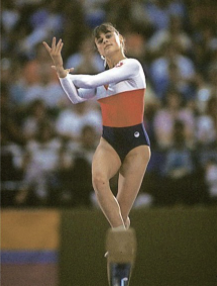

Romi Kessler (SUI)
9th AA, 1984 Olympic Games

Romi was born on February 20, 1963, in Wald. She was coached by Gabi
Schneider and Urs Straumann. She was the top gymnast in her country
and in Western Europe from 1978 to 1984. Romi and ex-husband Marco Piatti have three children and one grandchild. Romi works in Zurich as a management consultant.
- Competition Results
-
- 1978
- SUI-BUL Dual Meet: 2nd Team, 3rd AA
- SUI-HUN Dual Meet: 2nd Team, 9th AA
- Swiss World Team Trials: 2nd AA
- World Championships: 15th Team, 29th AA
-
- 1979
- Coupe de Geneve: 1st AA
- European Championships: 5th B, 18th AA
NOR-SUI Dual Meet: 1st Team, 1st AA
POL-SUI Dual Meet: 2nd Team, 3rd AA
- Sanlam Cup: 2nd AA
Swiss Championships: 1st AA
- SUI-GDR Dual Meet: 2nd Team, 3rd AA
- SUI-HUN Dual Meet: 2nd Team, 2nd AA
SUI-POL Dual Meet: 2nd Team, 3rd AA
- World Championships: 14th Team, 28th AA
-
- 1980
- Alternate Games (Hartford, CT): 12th AA
- International Championships of Romania: 5th B, 6th V,
6th UB, 10th AA
- SUI-CAN-JPN Meet: 3rd Team, 1st AA, 1st V, 1st B, 1st FX, 2nd UB
- Swiss Championships: 1st AA, 1st V, 1st UB, 1st B, 1st FX
West German Youth Invitational: 3rd Team, 3rd AA
-
- 1981
- European Championships: 14th AA
- International Championships of Romania: 5th AA, 4th B, 4th FX, 5th V
- Paris Grand Prix: 5th AA, 3rd B, 3rd FX, 6th V, 7th UB
- SUI-BEL Dual Meet: 1st Team, 1st AA
- SUI-GBR Dual Meet: 1st AA
- SUI-HUN-HOL Tri-Meet: 1st AA
- SUI-NOR Dual Meet: 1st AA
- World Championships: 15th Team, 21st AA
-
- 1982
- Antibes International: 4th AA, 4th V, 4th FX, 5th UB
BEL-SUI Dual Meet: 1st AA
- Rome Grand Prix: 6th AA
- Rouen International: 4th AA
Swiss Championships: 1st AA, 1st V, 1st UB, 1st B, 1st FX
SUI-GBR Dual Meet: 2nd Team, 1st AA
- Swiss Cup: 2nd AA
-
- 1983
- Chunichi Cup: 6th AA
- European Championships: 19th AA
- FRG-SUI Dual Meet: 1st Team, 1st AA
- Hungarian International: 1st UB, 6th AA
- Swiss Championships: 1st AA, 1st V, 1st UB, 1st B, 1st FX
- World Championships: 14th Team, 32nd AA
-
- 1984
- Intl. Championships of Romania: 4th AA
- Olympic Games: 5th UB, 5th FX, 6th B, 8th Team, 9th AA
- Winterthur International: 1st AA
- This page was last updated on May 7, 1999 and was last updated on February 28, 2021.
© Gymn Forum